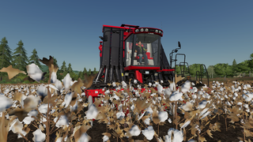
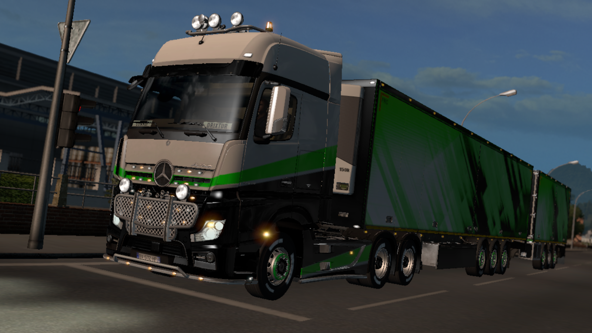
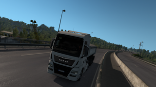
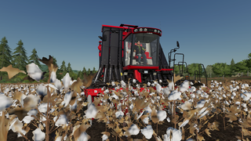
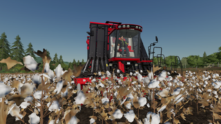

Accueil
Mods
Screenshots
LRG TEAM
Matériels
Contact
Screenshots - FS 19

Screenshots - ETS 2
 
Je vous partage mes plus beaux Screenshots, Merci de ne pas les télécharger, ni de les utiliser !
Cordialement l'agriculteur normand.

 
